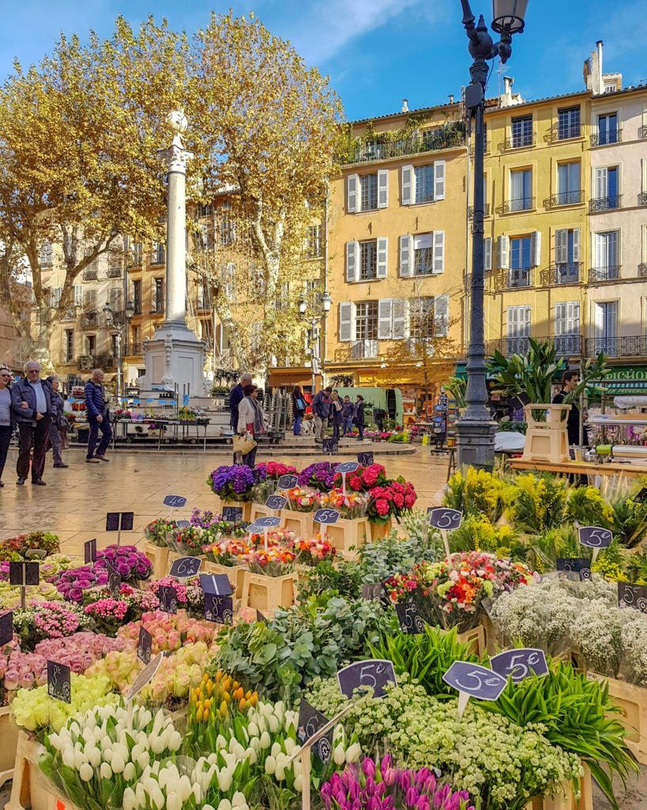
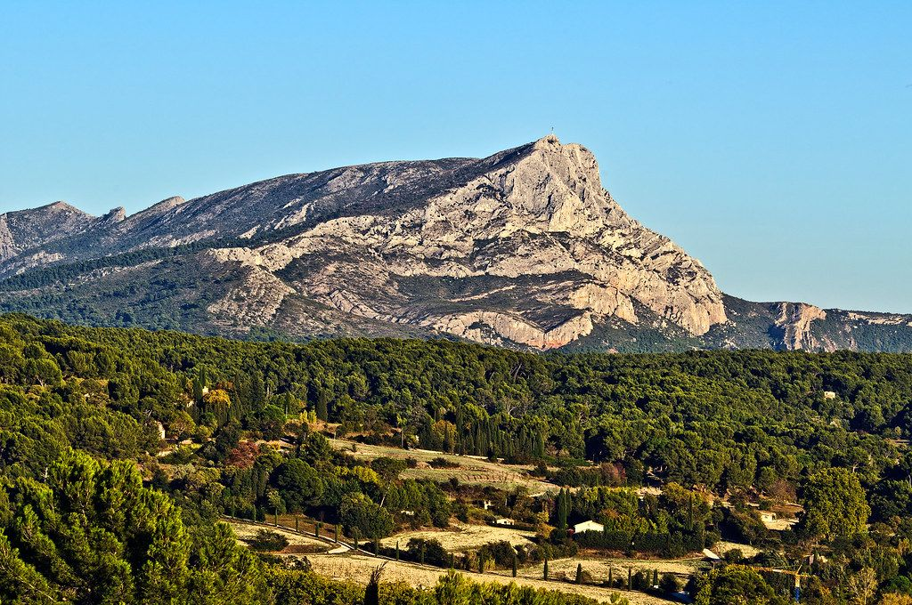
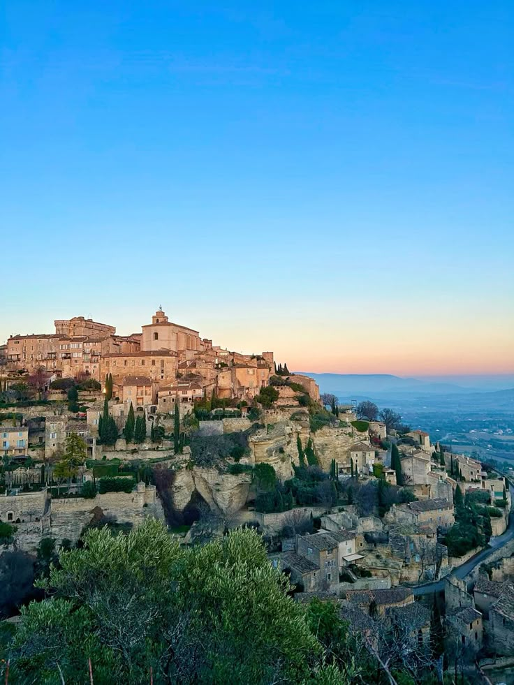
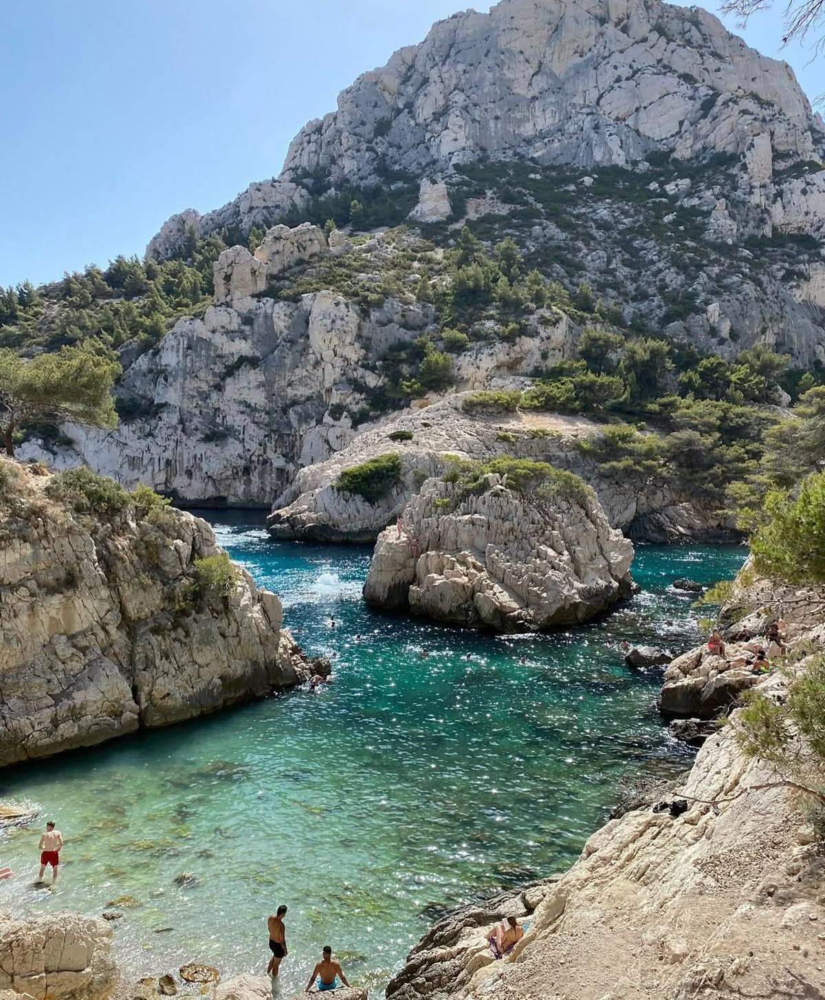
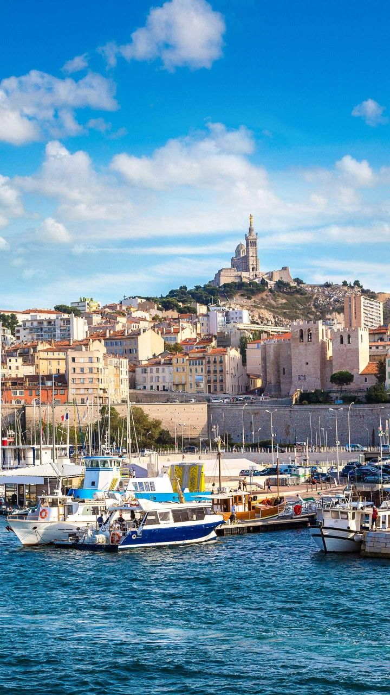

An exceptional estate · Restaurant · Private spa
Why choose Villa des Lys — Reviews and amenities of our home in Puyricard, Aix-en-Provence — what we love …

Aix-en-Provence
10 minutes away — the city of a thousand fountains
The Cours Mirabeau, the place d'Albertas, the Mazarin quarter, the elegant town houses and the Festival d'Art Lyrique: Aix invites itself to be lived as a leisurely walk.
Provençal markets on Wednesday, Saturday and Sunday, Michelin-starred restaurants, Cézanne's studio, Musée Granet — Aix's cultural life is a few steps away.

La Sainte-Victoire
25 minutes away — Cézanne's mountain
A myth painted and repainted by Cézanne, the mountain unfolds its limestone cliffs between vineyards and pine groves.
The Vénasques trail, the Croix de Provence, the Bimont reservoir, or simply a dinner facing the massif from a wine estate: Sainte-Victoire shifts with the light, never with the times.

Le Luberon
35 minutes away — hilltop villages and lavender fields
Gordes, Lourmarin, Bonnieux, Roussillon: the hilltop villages of the Luberon offer one of the finest landscapes in the south of France.
Lavender fields of Sault, the markets of Coustellet, the abbey of Sénanque — a string of images that have shaped the legend of Provence.

Les Calanques
45 minutes away — between Cassis and Marseille
The Calanques National Park carves its white cliffs into emerald water. En-Vau, Sugiton, Sormiou: secluded coves reached on foot or by boat.
The harbour of Cassis with its painted cabins, its crisp white wines, and the corniche road of Cap Canaille — the highest sea cliff in France.

Marseille
35 minutes away — the Phocaean city
The Mucem, the Panier, the Canebière, Notre-Dame de la Garde: Marseille reveals itself like a Mediterranean mosaic, between sunshine, colourful alleys and the salt air of the Old Port.
For food lovers, bouillabaisse at Vallon des Auffes or wood-fired pizzas — and the view from the Bonne Mère that takes in the entire bay.